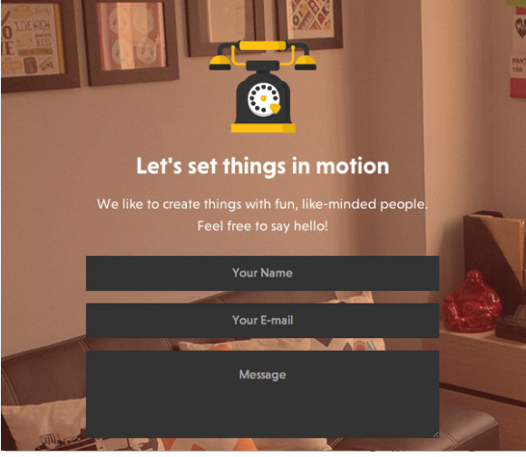

PARC: Contrast
Vandelay DesignVan Delay Design
PARC: Allignment
 WebDesignBrilliant Examples of Effective Contrast in Web Design.
PARC: Proximity
WebDesgnerDepotRecently I picked up an old design book that I hadn’t touched in a while.
Van Delay Design
Brilliant Examples of Effective Contrast in Web Design.
Recently I picked up an old design book that I hadn’t touched in a while.